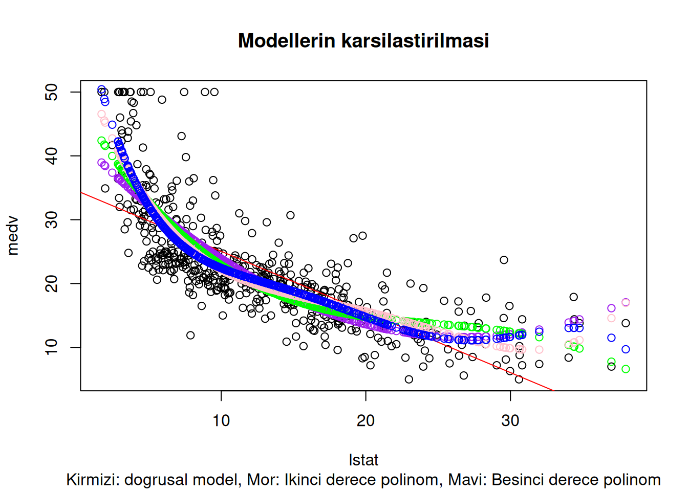

Attaching package: 'ISLR2'The following object is masked from 'package:MASS':
BostonÖncelikle kütüphanelerimizi yükleyelim:
Attaching package: 'ISLR2'The following object is masked from 'package:MASS':
BostonÇoklu model oluşturmak için de tine lm() fonksiyonunu kullanacağız:
$$
{}
$$
summary() fonksiyonu ile modelimizin ayrıntılarını elde edebiliriz:
Call:
lm(formula = medv ~ lstat + age, data = Boston)
Residuals:
Min 1Q Median 3Q Max
-15.981 -3.978 -1.283 1.968 23.158
Coefficients:
Estimate Std. Error t value Pr(>|t|)
(Intercept) 33.22276 0.73085 45.458 < 2e-16 ***
lstat -1.03207 0.04819 -21.416 < 2e-16 ***
age 0.03454 0.01223 2.826 0.00491 **
---
Signif. codes: 0 '***' 0.001 '**' 0.01 '*' 0.05 '.' 0.1 ' ' 1
Residual standard error: 6.173 on 503 degrees of freedom
Multiple R-squared: 0.5513, Adjusted R-squared: 0.5495
F-statistic: 309 on 2 and 503 DF, p-value: < 2.2e-16Bu veri setinde 12 farklı değişken var. Bu yüzden hepsini tek tek yazmak yerine aşağıdaki gibi de yazabiliriz:
Call:
lm(formula = medv ~ ., data = Boston)
Residuals:
Min 1Q Median 3Q Max
-15.1304 -2.7673 -0.5814 1.9414 26.2526
Coefficients:
Estimate Std. Error t value Pr(>|t|)
(Intercept) 41.617270 4.936039 8.431 3.79e-16 ***
crim -0.121389 0.033000 -3.678 0.000261 ***
zn 0.046963 0.013879 3.384 0.000772 ***
indus 0.013468 0.062145 0.217 0.828520
chas 2.839993 0.870007 3.264 0.001173 **
nox -18.758022 3.851355 -4.870 1.50e-06 ***
rm 3.658119 0.420246 8.705 < 2e-16 ***
age 0.003611 0.013329 0.271 0.786595
dis -1.490754 0.201623 -7.394 6.17e-13 ***
rad 0.289405 0.066908 4.325 1.84e-05 ***
tax -0.012682 0.003801 -3.337 0.000912 ***
ptratio -0.937533 0.132206 -7.091 4.63e-12 ***
lstat -0.552019 0.050659 -10.897 < 2e-16 ***
---
Signif. codes: 0 '***' 0.001 '**' 0.01 '*' 0.05 '.' 0.1 ' ' 1
Residual standard error: 4.798 on 493 degrees of freedom
Multiple R-squared: 0.7343, Adjusted R-squared: 0.7278
F-statistic: 113.5 on 12 and 493 DF, p-value: < 2.2e-16Burada sonuçlara tek tek ulaşabiliriz:
summary(lm.fit)$r.sq yazdığımızda bize \(R^2\), değerini verir.
Peki bu değişkenlerden bir tanesini çıkartmak istesek? Mesela age değişkeninin p değeri çok yüksek, onu modelden çıkartalım:
Call:
lm(formula = medv ~ . - age, data = Boston)
Residuals:
Min 1Q Median 3Q Max
-15.1851 -2.7330 -0.6116 1.8555 26.3838
Coefficients:
Estimate Std. Error t value Pr(>|t|)
(Intercept) 41.525128 4.919684 8.441 3.52e-16 ***
crim -0.121426 0.032969 -3.683 0.000256 ***
zn 0.046512 0.013766 3.379 0.000785 ***
indus 0.013451 0.062086 0.217 0.828577
chas 2.852773 0.867912 3.287 0.001085 **
nox -18.485070 3.713714 -4.978 8.91e-07 ***
rm 3.681070 0.411230 8.951 < 2e-16 ***
dis -1.506777 0.192570 -7.825 3.12e-14 ***
rad 0.287940 0.066627 4.322 1.87e-05 ***
tax -0.012653 0.003796 -3.333 0.000923 ***
ptratio -0.934649 0.131653 -7.099 4.39e-12 ***
lstat -0.547409 0.047669 -11.483 < 2e-16 ***
---
Signif. codes: 0 '***' 0.001 '**' 0.01 '*' 0.05 '.' 0.1 ' ' 1
Residual standard error: 4.794 on 494 degrees of freedom
Multiple R-squared: 0.7343, Adjusted R-squared: 0.7284
F-statistic: 124.1 on 11 and 494 DF, p-value: < 2.2e-16Alternatif olarak update() fonksiyonu kullanılabilr:
lm.fit1 <- update(lm.fit, ~ . - age)Eğer iki değişkenin arasında etkileşim belirlemek istiyorsanız şöyle bir notasyonu uygulayabilirsiniz:
lstat\(\times\)age
Call:
lm(formula = medv ~ lstat * age, data = Boston)
Residuals:
Min 1Q Median 3Q Max
-15.806 -4.045 -1.333 2.085 27.552
Coefficients:
Estimate Std. Error t value Pr(>|t|)
(Intercept) 36.0885359 1.4698355 24.553 < 2e-16 ***
lstat -1.3921168 0.1674555 -8.313 8.78e-16 ***
age -0.0007209 0.0198792 -0.036 0.9711
lstat:age 0.0041560 0.0018518 2.244 0.0252 *
---
Signif. codes: 0 '***' 0.001 '**' 0.01 '*' 0.05 '.' 0.1 ' ' 1
Residual standard error: 6.149 on 502 degrees of freedom
Multiple R-squared: 0.5557, Adjusted R-squared: 0.5531
F-statistic: 209.3 on 3 and 502 DF, p-value: < 2.2e-16Eğer incelenen değişkenler arasında doğrusal olmayan bir ilişki varsa bunu da doğrusal model içerisinde belirtme imkanımız var. Örnek verelim,\(X\) girdisi varlığı altında \(X^2\) değişkenini I(X^2) notasyonu ile ifade edebiliriz.
Burada I() fonksiyonunun özel bir işlevi bulunmaktadır. Normalde ^ karakteri üssel sayıları belirtir. Ancak bizim amacımız sembolik bir notasyon yazmak. Böyle olunca bu sembolu kullanmamız gerekidir.
Call:
lm(formula = medv ~ lstat + I(lstat^2), data = Boston)
Residuals:
Min 1Q Median 3Q Max
-15.2834 -3.8313 -0.5295 2.3095 25.4148
Coefficients:
Estimate Std. Error t value Pr(>|t|)
(Intercept) 42.862007 0.872084 49.15 <2e-16 ***
lstat -2.332821 0.123803 -18.84 <2e-16 ***
I(lstat^2) 0.043547 0.003745 11.63 <2e-16 ***
---
Signif. codes: 0 '***' 0.001 '**' 0.01 '*' 0.05 '.' 0.1 ' ' 1
Residual standard error: 5.524 on 503 degrees of freedom
Multiple R-squared: 0.6407, Adjusted R-squared: 0.6393
F-statistic: 448.5 on 2 and 503 DF, p-value: < 2.2e-16Dikkat edersek kuadratik terim (lstat^2) artık çok düşük bir \(p-değeri\) ile belirtildi. Yani burada kuadratik bir fonksiyon yazmamız daha iyi bir model elde etmemizi olanaklı kıldı.
Daha fazla üssel terim eklemek ve polinom fonksiyonumuzun derecesini arttırmak istersek aşağıdaki şekilde yazma imkanımız var:
lm(medv, poly(lstat, 5), data = Boston)Bu sayaede beşinci dereceden fonksyionu otomatik olarak oluşturabiliriz:
Call:
lm(formula = medv ~ poly(lstat, 5), data = Boston)
Residuals:
Min 1Q Median 3Q Max
-13.5433 -3.1039 -0.7052 2.0844 27.1153
Coefficients:
Estimate Std. Error t value Pr(>|t|)
(Intercept) 22.5328 0.2318 97.197 < 2e-16 ***
poly(lstat, 5)1 -152.4595 5.2148 -29.236 < 2e-16 ***
poly(lstat, 5)2 64.2272 5.2148 12.316 < 2e-16 ***
poly(lstat, 5)3 -27.0511 5.2148 -5.187 3.10e-07 ***
poly(lstat, 5)4 25.4517 5.2148 4.881 1.42e-06 ***
poly(lstat, 5)5 -19.2524 5.2148 -3.692 0.000247 ***
---
Signif. codes: 0 '***' 0.001 '**' 0.01 '*' 0.05 '.' 0.1 ' ' 1
Residual standard error: 5.215 on 500 degrees of freedom
Multiple R-squared: 0.6817, Adjusted R-squared: 0.6785
F-statistic: 214.2 on 5 and 500 DF, p-value: < 2.2e-16This suggests that including additional polynomial terms, up to fifth order, leads to an improvement in the model fit! However, further investigation of the data reveals that no polynomial terms beyond fifth order have significant \(p\)-values in a regression fit.
Bu, beşinci sıraya kadar ek polinom terimlerinin eklenmesinin model uyumunda bir iyileşmeye yol açtığını göstermektedir! Bununla birlikte, verilerin daha fazla araştırılması, beşinci derecenin ötesinde hiçbir polinom teriminin bir regresyon uyumunda anlamlı \(p\) değerlerine sahip olmadığını ortaya koymaktadır.
Peki bu üç modeli grafik üzerinden karşılaştırabilir miyiz?
# once basit dogrusal model
lm.fit <- lm(medv ~ lstat, data = Boston)
lm.fit2 <- lm(medv ~ poly(lstat, 2), data = Boston)
lm.fit3 <- lm(medv ~ poly(lstat, 3), data = Boston)
lm.fit4 <- lm(medv ~ poly(lstat, 4), data = Boston)
lm.fit5 <- lm(medv ~ poly(lstat, 5), data = Boston)
plot(medv~lstat, data = Boston)
abline(lm.fit, col = "red")
points(x = Boston$lstat, y = fitted(lm.fit2), col = "purple")
points(x = Boston$lstat, y = fitted(lm.fit3), col = "green")
points(x = Boston$lstat, y = fitted(lm.fit4), col = "pink")
points(x = Boston$lstat, y = fitted(lm.fit5), col = "blue")
title("Modellerin karsilastirilmasi", sub = "Kirmizi: dogrusal model, Mor: Ikinci derece polinom, Mavi: Besinci derece polinom")